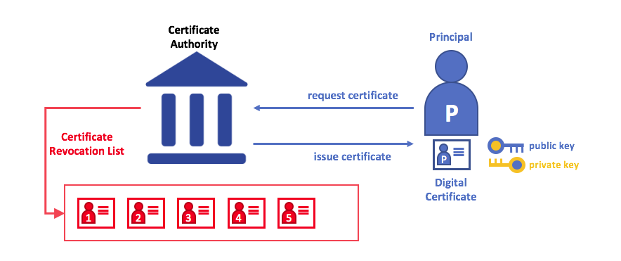

Identidade¶
O que é uma identidade?¶
Os diferentes atores em uma rede blockchain incluem nós pares, ordens, aplicativos clientes, administradores e muito mais. Cada um desses atores – elementos ativos dentro ou fora de uma rede e capaz de consumir serviços – possui uma identidade digital encapsulada em um certificado digital X.509. Essas identidades realmente importam porque determinam as permissões exatas dos recursos e acessos as informações que os atores têm em uma rede blockchain.
Além disso, uma identidade digital possui alguns atributos adicionais que a Fabric usa para determinar permissões e da à união de uma identidade e dos atributos associados um nome especial — principal. Principals são exatamente como IDs de usuário ou IDs de grupo, mas um pouco mais flexíveis porque podem incluir uma ampla variedade de propriedades da identidade de um ator, como organização, unidade organizacional, função ou até mesmo a identidade específica do ator. Quando falamos sobre entidades, elas são as propriedades que determinam suas permissões.
Para uma identidade ser verificável, ela deve vir de uma autoridade confiável. Um provedor de serviços de associação (MSP) é essa autoridade confiável na Fabric. Mais especificamente, um MSP é um componente que define as regras que governam as identidades válidas para esta organização. A implementação padrão do MSP na Fabric usa certificados X.509 como identidades, adotando um modelo hierárquico tradicional de Infraestrutra de Chave Pública (PKI) (mais sobre PKI adiante).
Um cenário simples para explicar o uso de uma identidade¶
Imagine que você visita um supermercado para realizar algumas compras. No caixa, você vê uma placa informando que apenas os cartões Visa, Mastercard e AMEX são aceitos. Se você tentar pagar com um cartão diferente – vamos usar um “ImagineCard” - não importa se o cartão é autêntico e que você tem fundos suficientes em sua conta. Não será aceito.

Não basta ter um cartão de crédito válido – ele também deve ser aceito pela loja! PKIs e MSPs trabalham juntos da mesma maneira – uma PKI fornece uma lista de identidades e um MSP diz quais deles são membros de uma determinada organização que participa da rede.
As autoridades de certificação da PKI e os MSPs fornecem uma combinação semelhante de funcionalidades. Uma PKI é como um fornecedor de cartões – distribui muitos tipos diferentes de identidades verificáveis. Um MSP, por outro lado, é como a lista de fornecedores de cartões aceitos pela loja, determinando quais identidades são os membros confiáveis (atores) da rede de pagamento da loja. MSPs transformam identidades verificáveis em membros de uma rede blockchain.
Vamos detalhar esses conceitos um pouco mais detalhadamente.
O que são PKIs?¶
Uma infraestrutura de chave pública (PKI) é uma coleção de tecnologias da Internet que fornece comunicações seguras em uma rede. É a PKI que coloca o S em HTTPS — e se você estiver lendo esta documentação em um navegador da Web, você provavelmente está usando uma PKI para garantir que ela seja proveniente de uma fonte verificada.

Os elementos da infraestrutura de chave pública (PKI). Uma PKI é composta por autoridades de certificação que emitem certificados digitais para as partes (por exemplo, usuários de um serviço, provedor de serviços), que as usam para se autenticar nas mensagens que trocam em seu ambiente. A lista de revogação de certificados (CRL) de uma CA constitui uma referência para os certificados que não são mais válidos. A revogação de um certificado pode ocorrer por vários motivos. Por exemplo, um certificado pode ser revogado porque o material criptográfico privado associado ao certificado foi exposto.
Embora uma rede blockchain seja mais do que uma rede de comunicações, ela se baseia no padrão PKI para garantir a comunicação segura entre vários participantes da rede e para garantir que as mensagens postadas na blockchain sejam autenticadas corretamente. Portanto, é importante entender os conceitos básicos da PKI e, em seguida, por que os MSPs são tão importantes.
Existem quatro elementos principais para a PKI:
- Certificados Digitais
- Chaves Públicas e Privadas
- Autoridade Certificadora
- Lista de Certificados Revogados
Vamos descrever rapidamente os conceitos básicos da PKI e, se você quiser saber mais detalhes, a Wikipedia é um bom lugar por onde começar.
Certificados Digitais¶
Um certificado digital é um documento que contém um conjunto de atributos relacionados ao titular do certificado. O tipo mais comum de certificado é aquele compatível com o padrão X.509, que permite a codificação dos detalhes de identificação de uma entidade em sua estrutura.
Por exemplo, Mary Morris na Divisão de Fabricação da Mitchell Cars em Detroit,
Michigan, pode ter um certificado digital com o atributo SUBJECT de C=US,
ST=Michigan, L=Detroit, O=Mitchell Automóveis, OU=Manufacturing,
CN=Mary Morris / UID = 123456. O certificado de Mary é semelhante ao seu
cartão de identidade do governo – fornece informações sobre Mary que ela pode
usar para provar fatos importantes sobre ela. Existem muitos outros atributos em
um certificado X.509, mas vamos nos concentrar apenas nesses por enquanto.

*Um certificado digital que descreve uma parte chamada Mary Morris. Mary é o
ASSUNTO (SUBJECT) do certificado e o texto em destaque SUBJECT mostra fatos
importantes sobre Mary. O certificado também contém muito mais informações, como
você pode ver. Mais importante, a chave pública de Mary é distribuída dentro de
seu certificado, enquanto sua chave de assinatura privada não é. Essa chave de
assinatura deve ser mantida em sigilo. *
O importante é que todos os atributos de Mary possam ser registrados usando uma técnica matemática chamada criptografia (literalmente, “escrita secreta”) para que a adulteração invalide o certificado. A criptografia permite que Mary apresente seu certificado a outras pessoas para provar sua identidade, desde que a outra parte confie no emissor do certificado, conhecido como Autoridade de Certificação (CA). Desde que a CA mantenha certas informações criptográficas com segurança (ou seja, sua própria chave de assinatura privada), qualquer pessoa que esteja lendo o certificado pode ter certeza de que as informações sobre Mary não foram adulteradas. Pense no certificado X.509 de Mary como uma carteira de identidade digital impossível de mudar.
Autenticação, Chaves Públicas e Chaves Privadas¶
Autenticação e integridade da mensagem são conceitos importantes em comunicações seguras. A autenticação exige que as partes que trocam mensagens tenham certeza da identidade que criou uma mensagem específica. Para uma mensagem ter “integridade” significa que não pode ter sido modificado durante sua transmissão. Por exemplo, convém ter certeza de que está se comunicando com a verdadeira Mary Morris, e não com um imitador. Ou, se Mary lhe enviou uma mensagem, convém ter certeza de que ela não foi adulterada por mais ninguém durante a transmissão.
Os mecanismos de autenticação tradicionais dependem de assinaturas digitais que, como o nome sugere, permitem que uma parte assine digitalmente suas mensagens. As assinaturas digitais também fornecem garantias sobre a integridade da mensagem assinada.
Tecnicamente, os mecanismos de assinatura digital exigem que cada parte mantenha duas chaves criptograficamente conectadas: uma chave pública que é amplamente disponibilizada e atua como âncora de autenticação e uma chave privada usada para produzir assinaturas digitais nas mensagens. Os destinatários das mensagens assinadas digitalmente podem verificar a origem e a integridade de uma mensagem recebida, verificando se a assinatura anexada é válida sob a chave pública do remetente esperado.
O relacionamento exclusivo entre uma chave privada e a respectiva chave pública é a mágica criptográfica que torna possível a comunicação segura. O relacionamento matemático exclusivo entre as chaves é tal que a chave privada pode ser usada para produzir uma assinatura em uma mensagem que somente a chave pública correspondente pode corresponder e apenas na mesma mensagem.

No exemplo acima, Mary usa sua chave privada para assinar a mensagem. A assinatura pode ser verificada por qualquer pessoa que veja a mensagem assinada usando sua chave pública.
Autoridades de certificação¶
Como você viu, um ator ou um nó pode participar da rede blockchain, por meio de uma identidade digital emitida por uma autoridade confiável pelo sistema. No caso mais comum, as identidades digitais (ou simplesmente identidades) têm a forma de certificados digitais validados criptograficamente que estão em conformidade com o padrão X.509 e são emitidos por uma Autoridade de Certificação (CA).
As CAs são uma parte comum dos protocolos de segurança da Internet, e você provavelmente já ouviu falar de alguns dos mais populares: Symantec (originalmente Verisign), GeoTrust, DigiCert, GoDaddy e Comodo, entre outros.

Uma autoridade de certificação distribui certificados para diferentes atores. Esses certificados são assinados digitalmente pela CA e vinculam o ator à chave pública do ator (e, opcionalmente, a uma lista abrangente de propriedades). Como resultado, se alguém confia na CA (e conhece sua chave pública), pode confiar que o ator específico está vinculado à chave pública incluída no certificado e possui os atributos incluídos, validando a assinatura da CA no certificado do ator.
Os certificados podem ser amplamente divulgados, pois não incluem as chaves privadas dos atores nem da CA. Como tal, eles podem ser usados como âncora de relações de confiança para autenticar mensagens vindas de diferentes atores.
As autoridades de certificação também possuem um certificado, que eles disponibilizam amplamente. Isso permite que os consumidores de identidades emitidas por uma determinada CA os verifiquem, verificando se o certificado só pode ter sido gerado pelo titular da chave privada correspondente (a CA).
Em uma configuração de blockchain, todo ator que deseja interagir com a rede precisa de uma identidade. Nessa configuração, você pode dizer que uma ou mais CAs podem ser usadas para definir os membros de uma organização de uma perspectiva digital. É a CA que fornece a base para que os atores de uma organização tenham uma identidade digital verificável.
CAs raiz, CAs Intermediárias e Cadeias de Confiança¶
As CAs têm dois tipos: CAs Raiz e CAs Intermediárias. Como as CAs raiz (Symantec, Geotrust etc.) precisam distribuir com segurança centenas de milhões de certificados para os usuários da Internet, faz sentido espalhar esse processo pelas chamadas CAs intermediárias. Essas CAs intermediárias têm seus certificados emitidos pela CA raiz ou outra autoridade intermediária, permitindo o estabelecimento de uma “cadeia de confiança” para qualquer certificado emitido por qualquer CA da cadeia. Essa capacidade de rastrear a autoridade de certificação raiz não apenas permite o dimensionamento da função das autoridades de certificação, mas também fornece segurança – permitindo que as organizações que consomem certificados usem as autoridades de certificação intermediárias com confiança – limita a exposição da autoridade de certificação raiz, que, se comprometido, colocaria em risco toda a cadeia de confiança. Se uma CA intermediária for comprometida, por outro lado, haverá uma exposição muito menor.

Uma cadeia de confiança é estabelecida entre uma CA Raiz e um conjunto de CAs Intermediárias, desde que a CA de emissão do certificado de cada uma dessas CAs Intermediárias seja a própria CA Raiz ou tenha uma cadeia de confiança na CA Raiz.
As CAs intermediárias fornecem uma enorme flexibilidade quando se trata da emissão de certificados em várias organizações, e isso é muito útil em um sistema de blockchain permissionado (como a Fabric). Por exemplo, você verá que organizações diferentes podem usar CAs raiz diferentes ou a mesma CA raiz com CAs intermediárias diferentes – isso realmente depende das necessidades da rede.
Fabric CA¶
Isso ocorre porque as CAs são tão importantes que a Fabric fornece um componente de CA interno para permitir que você crie CAs nas redes de blockchain que você formar. Esse componente — conhecido como Fabric CA é um provedor de CA raiz privado, capaz de gerenciar identidades digitais de participantes da Fabric que possuem o formato de certificados X.509. Como a Fabric CA é uma CA personalizada, direcionada às necessidades de CA raiz da Fabric, ela não é capaz de fornecer certificados SSL para uso geral/automático nos navegadores. No entanto, como alguma CA deve ser usada para gerenciar a identidade (mesmo em um ambiente de teste), a Fabric CA pode ser usada para fornecer e gerenciar certificados. Também é possível – e totalmente apropriado – usar uma raiz pública/comercial ou CA intermediária para fornecer identificação.
Se você estiver interessado, pode ler muito mais sobre o Fabric CA na seção de documentação da CA.
Lista de Certificados Revogados¶
É fácil entender uma lista de revogação de certificados (CRL) – é apenas uma lista de referências a certificados que uma CA sabe que foi revogada por um motivo ou outro. Se você se lembrar do cenário da loja, uma CRL seria como uma lista de cartões de crédito roubados.
Quando uma terceira parte deseja verificar a identidade de outra parte, ela primeiro verifica a CRL da CA emissora para garantir que o certificado não foi revogado. Um verificador não precisa verificar a CRL, mas se não o fizer, corre o risco de aceitar uma identidade comprometida.

Usando uma CRL para verificar se um certificado ainda é válido. Se um imitador tentar passar um certificado digital comprometido para uma parte que está validando, ele poderá ser verificado primeiro na CRL da CA emissora para garantir que não esteja listado como não válido.
Observe que um certificado que está sendo revogado é muito diferente de um certificado que está expirando. Os certificados revogados não expiraram – eles são, por qualquer outra medida, um certificado totalmente válido. Para obter informações mais detalhadas sobre CRLs, clique em aqui.
Agora que você viu como uma PKI pode fornecer identidades verificáveis por meio de uma cadeia de confiança, a próxima etapa é ver como essas identidades podem ser usadas para representar os membros confiáveis de uma rede blockchain. É aí que um Provedor de Serviço de Associação (MSP) entra em ação — identifica as partes que são membros de uma determinada organização na rede blockchain.
Para saber mais sobre associação, consulte a documentação conceitual em MSPs.